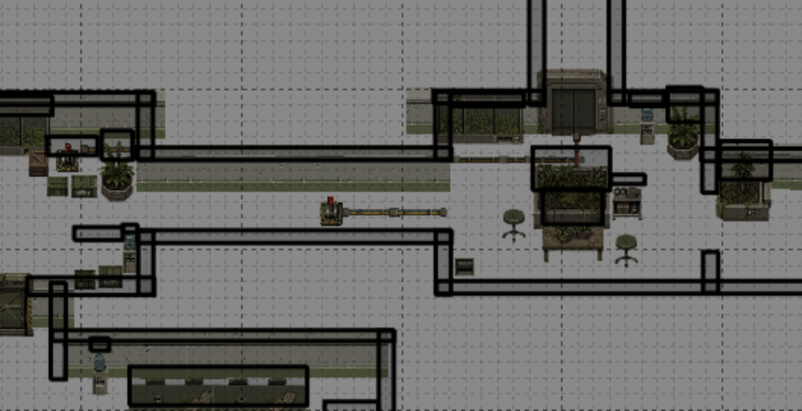
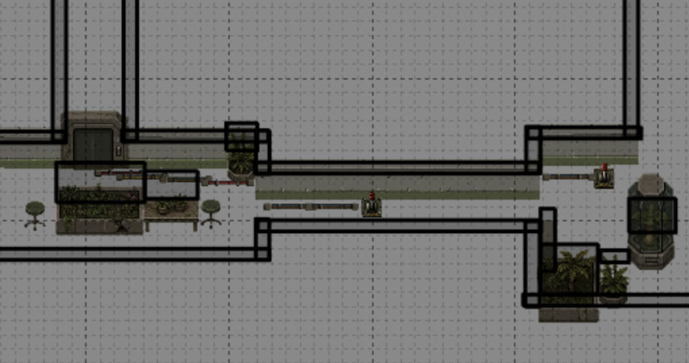
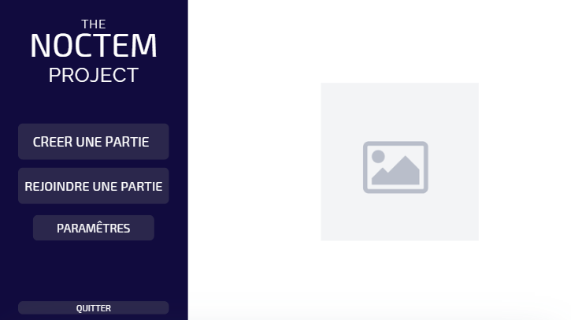

Survie coopérative
Les joueurs doivent progresser ensemble, partager les informations et coordonner leurs actions pour espérer survivre.
Survival horror coopératif en LAN
NOCTEM est un jeu d'horreur coopératif en petit groupe où les joueurs doivent survivre et s'échapper dans un environnement sombre, avec une vision limitée, des interactions avec le décor et une menace qui met constamment la pression.
Présentation
Un prototype de survival horror coopératif centré sur la tension, l'exploration, la coordination entre joueurs et la fuite face à une menace.
Les joueurs doivent progresser ensemble, partager les informations et coordonner leurs actions pour espérer survivre.
Le jeu repose sur une ambiance sombre, une vision limitée et l'exploration d'un environnement dangereux rempli d'obstacles et d'interactions.
Un monstre met la pression sur les joueurs avec un comportement de poursuite, du pathfinding et des déplacements liés aux vents.
Gameplay
NOCTEM mise sur la communication, l'exploration et les interactions avec le décor. Les joueurs doivent se déplacer, observer, agir sur l'environnement et éviter une menace capable de les traquer.
Création et connexion à une partie, lobby avec système de prêt, lancement de session et synchronisation des positions.
Certaines actions se font directement en jeu, notamment les interactions avec des leviers et l'ouverture ou fermeture de portes.
Filtre de nuit, halos de lumière, déplacements limités par les collisions et présence d'un monstre avec IA de base.
Avancement
Le développement de NOCTEM est désormais achevé. Le jeu est complet, jouable dans son intégralité, avec toutes ses mécaniques, son ambiance et son contenu finalisés.
Lancement du jeu, multijoueur LAN, lobby, déplacements, collisions, caméra, filtre de nuit, interactions, portes/leviers et synchronisation réseau entièrement finalisés.
Tâches, énigmes, objectifs de fuite, rôles et inventaire pleinement intégrés. Toutes les mécaniques coopératives sont complètes et jouables.
Assets visuels, ambiance sonore, musique, vraie gestion de la lumière et support multi-joueurs au-delà de 2 joueurs — tout est implémenté.
Captures
Premiers visuels du jeu : plan, circulation dans la map et interface prototype autour de l'exploration et de la coopération.


